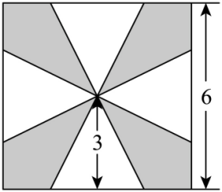

示例学校2025-2026学年度第二学期期中考试 Q14
题目
14．如图，一块边长为6cm的正方形铁片上有四块全等的阴影部分.将这些阴影部分裁下来，然后用余下的四个全等的等腰三角形拼凑成一个正四棱锥形容器（不考虑铁片的损耗），则该容器容积（忽略铁片的厚度）最大时，容器的底面边长为______cm.

答案与解析
未匹配到解析。
结构化摘要
{
"question_id": "szzx_2025_2026_g2_midterm_q014",
"answer": "2sqrt(6)",
"score": 5,
"score_source": "section_rule",
"score_note": "填空题：每小题5分",
"assets": [
{
"id": "img001",
"type": "image",
"origin": "source",
"rel_id": "rId8",
"source": "word/media/image2.png",
"path": "assets/szzx_2025_2026_g2_midterm_q014_image_01.png",
"original_path": "assets/szzx_2025_2026_g2_midterm_q014_image_01.png",
"preview_generated": false
}
],
"ole_objects": [],
"extraction": {
"source_paragraph_range": [
43,
46
],
"solution_paragraph_range": null,
"formula_count": 1,
"image_count": 1,
"ole_count": 0,
"quality_flags": [
"contains_images",
"contains_omml",
"missing_solution"
]
}
}